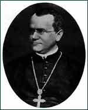

Johann Gregor Mendel
1822-1884
Born on July 22, 1822, Gregor Mendel was an active member of the
scientific community of his day. Educated at the University of Vienna,
he decided at the age of 21 to become a friar at an Augustinian
monastery in Brno, Czechoslovakia. The monastery was a center of
contemporary learning in theology, philosophy, and the natural sciences,
and Mendel was able to exchange ideas with other scientific thinkers.
In the early 1850s, Mendel wanted to develop some new color variations
for the flowers in the monastery gardens. He began experimenting
with the pea plants in the garden. At that time, nobody understood
how traits are inherited. Mendel took a unique approach: he studied
just one trait at a time. For example, he might cross two plants
that were exactly the same, except that one was tall and one was
short. . . or one was yellow and the other green. . . or one had peas that
were round and the other peas that were wrinkled. He found that
the pea plants' offspring inherited the various traits in constant
proportions. He realized that inheritance is governed by mathematical
principles that he could use to predict what kind of offspring the
plants would produce.
Mendel developed a hypothesis to explain what he saw. He proposed
that traits were transferred through reproductive cells according
to certain principles. He would later test his hypothesis in a total
of 27 species of plants.
Mendel published his findings in 1865 in The Proceedings of
the Brünn Natural Science Society. The paper was widely distributed
to scientific associations and libraries, and Mendel himself sent
copies to prominent botanists, but few people took notice. At that
time, the scientific community was up in arms over Charles Darwin's
theory of evolution, and Mendel's discovery was more or less eclipsed.
Although a few botanists quoted his work as early as 1867, it wasn't
until 1900 that scientists would rediscover and embrace Mendel's
Laws of Heredity.
In 1868, Mendel became abbot of the monastery, a position he held
until his death in 1884. During this time he also began studying
inheritance in bees. Eventually, scientists determined that his
principles could be applied to all sexually-reproducing organisms.
Today, visitors to the city of Brno (now a part of the Czech Republic)
can visit Mendel's tomb in the central cemetery and "Mendelianum,"
a museum located in the Augustinian monastery where Mendel lived
and worked.